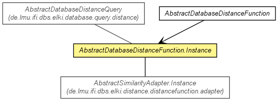

de.lmu.ifi.dbs.elki.distance.distancefunction
Class AbstractDatabaseDistanceFunction.Instance<O,D extends Distance<D>>
java.lang.Object
 de.lmu.ifi.dbs.elki.database.query.AbstractDataBasedQuery<O>
de.lmu.ifi.dbs.elki.database.query.distance.AbstractDistanceQuery<O,D>
de.lmu.ifi.dbs.elki.database.query.distance.AbstractDatabaseDistanceQuery<O,D>
de.lmu.ifi.dbs.elki.distance.distancefunction.AbstractDatabaseDistanceFunction.Instance<O,D>
de.lmu.ifi.dbs.elki.database.query.AbstractDataBasedQuery<O>
de.lmu.ifi.dbs.elki.database.query.distance.AbstractDistanceQuery<O,D>
de.lmu.ifi.dbs.elki.database.query.distance.AbstractDatabaseDistanceQuery<O,D>
de.lmu.ifi.dbs.elki.distance.distancefunction.AbstractDatabaseDistanceFunction.Instance<O,D>
- All Implemented Interfaces:
- DatabaseQuery, DistanceQuery<O,D>
- Direct Known Subclasses:
- AbstractSimilarityAdapter.Instance
- Enclosing class:
- AbstractDatabaseDistanceFunction<O,D extends Distance<D>>
public abstract static class AbstractDatabaseDistanceFunction.Instance<O,D extends Distance<D>>
- extends AbstractDatabaseDistanceQuery<O,D>

The actual instance bound to a particular database.
| Methods inherited from class java.lang.Object |
clone, equals, finalize, getClass, hashCode, notify, notifyAll, toString, wait, wait, wait |
parent
DistanceFunction<? super O,D extends Distance<D>> parent
- Parent distance
AbstractDatabaseDistanceFunction.Instance
public AbstractDatabaseDistanceFunction.Instance(Relation<O> database,
DistanceFunction<? super O,D> parent)
- Constructor.
- Parameters:
database - Databaseparent - Parent distance
getDistanceFunction
public DistanceFunction<? super O,D> getDistanceFunction()
- Description copied from interface:
DistanceQuery
- Get the inner distance function.
- Returns:
- Distance function